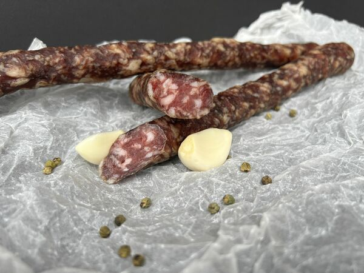

Mangalica házhozszállítás
A gesztelyi kisüzemünkből, a saját járatunkkal visszük ki a friss tőkehúst, kolbászt és szalonnát a saját járatunkkal.

Kedvencek a környéken
[A „kedvencek” élesítés után a helyi rendelési adatokból töltődnek.]
Helyi kérdések
Környező települések
„Minden téren 5 csillag. Amióta rájuk találtam, csak tőlük fogyasztok sertésterméket.”